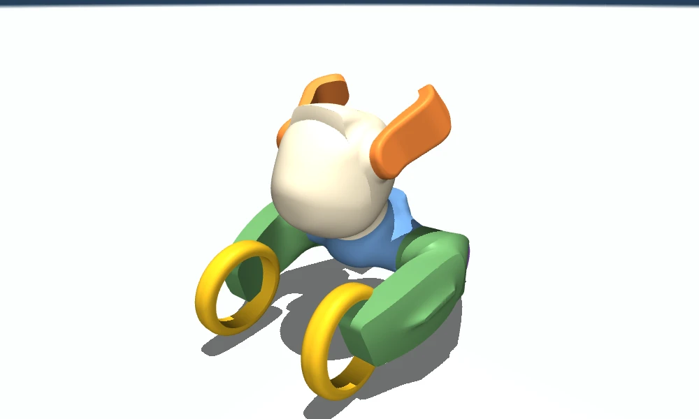
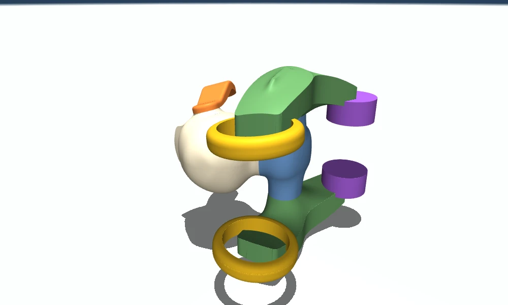
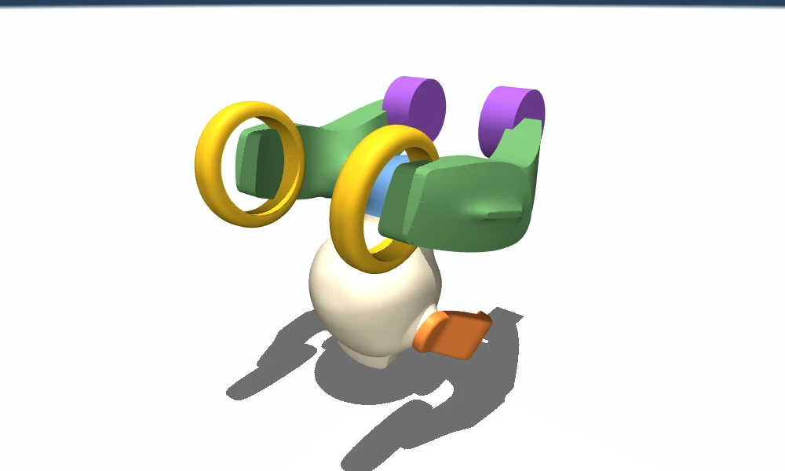

历史报告 · 2026-09-24 查看当前需求基线 。PETBOT / TECHNICAL RESEARCH NOTE · 01 Reinforcement learning for recovery
PetBot 让机器人从侧倒、仰倒、趴倒及跌落后的复杂姿态中，利用自身的轮、车架、头部和耳朵，闭环恢复到可继续行驶的标准站姿。
当前 MJCF 已核对 允许全身接触 实机力矩控制

当前模型的真实网格渲染；颜色用于区分部件。图像并非训练结果。 1.65254 kg 当前总质量
7 路 主动执行器 / 9 个转动关节
255 × 220 × 223 默认姿态外包络，约 mm
2080 Ti · 11 GB 当前可用 GPU，容器内实测
01 / DECISION 建议：先确认能翻，再学习怎么翻得好 推荐主线 · 针对当前构型的工程判断 原生 MuJoCo 可行性验证 → PPO 基础策略 → mjlab / MuJoCo Warp 批量训练 → 平顺性课程与域随机化 → 原生 MuJoCo 复验 → 实机力矩闭环。
首版采用一个覆盖多种倒地姿态的反馈策略，加一个负责接管与退出的有限状态机。优先训练统一的七维力矩策略；用保留当前“五关节位置目标＋两后轮速度目标”的策略作为对照。暂不引入视觉、大模型或复杂多专家系统。
已有研究证明了什么 强化学习自恢复是已有实机成果的研究方向：四足、轮足、无臂双足轮式和人形平台均有相关工作。它适合处理多接触、动作顺序不固定、需要先降低再抬高重心的过程。[R1] [R3] [R4]
这些成果没有证明什么 尚不能据此保证 PetBot 从所有姿态必然起身。它只有两个单轴车架、两个驱动轮和较小的耳朵力矩，构型与论文平台不同；需要先验证真实限位、力矩与接触下的可恢复范围。
本报告采用的需求定义 用户已确认： 任何当前模型允许的姿态和全身触地方式都可使用；头部、耳朵允许承重。实机可读取关节角度、速度、力矩，并能控制力矩。恢复目标： 躯干重新直立、四轮稳定着地、五个有界关节接近默认零位、线速度和角速度收敛，然后可重新驾驶。轮子转过多少圈不影响站姿。默认不约束： 世界坐标中的原位置与偏航朝向。若要求回到原来的坐标和朝向，还需定位与偏航参考，属于额外目标。场景边界： 先覆盖平地上的推倒、滚翻和有限高度跌落；全姿态覆盖不等于任意冲击能量、任意地形、任意损坏状态都能恢复。首版在落地后完成自恢复，空中主动姿态控制作为后续扩展。下文使用三种证据标签：模型事实 来自当前文件或容器测量；文献结果 只对论文实验条件成立；建议参数 用于后续试验，不代表已训练或实测达标。
02 / MODEL AUDIT 这个机器人有什么可用的恢复能力 以 42fcbfdf889164eb7cd9773eeffaf3aca919ec27 为依据，容器中的 robot_description/mjcf/scene.xml 包含模型和地面接触配置。坐标约定为 X 前、Y 左、Z 上；STL 由毫米缩放为米。
部件 / 自由度 当前质量 当前能力 对自恢复的意义
头部 × 1 0.430 kg ±1.3 rad；±0.72 N·m；转轴向前倾约 27° 头部约占整机质量 26%；可改变接触与质量分布，但不能把它当作独立的俯仰＋偏航两自由度机构。 左右耳 × 2 各 0.02431 kg −1.0～3.0 rad；各 ±0.10 N·m 允许撑地、改变支点、打破对称或辅助摆动。能否承担主要抬升作用仍受小力矩和力臂约束。 左右车架 × 2 各 0.360 kg −1.0～1.2 rad；各 ±1.20 N·m；绕横向轴旋转 两侧可独立摆动；同侧前后轮随车架一起运动。它们不是可独立伸缩的四条腿。 后轮 × 2 各 0.05034 kg 半径 30 mm；速度目标 ±25 rad/s；力矩上限 ±0.38 N·m 利用着地轮的牵引力与车架配合，也可能参与瞬态角动量交换；离地空转不等于能无限产生翻转力矩。 前轮 × 2 各 0.02638 kg 半径约 45 mm；被动；轮轴有约 5° 倾斜 属于被动支撑与滚动接触，不应给策略添加虚构的前轮动作维度。 中央机身 0.300 kg 与浮动基座固连；包含 IMU site 模型有加速度计和陀螺仪；实机重力方向应由姿态估计器得到。
模型事实 关节配置维度 nq=16，速度自由度 nv=15：6 个浮动基自由度＋9 个转动自由度；主动执行器 nu=7。默认零位总质心约为 (8.13, 0, 90.03) mm，其中 Z 为相对当前地面的高度。左右车架局部质心相较旧模型后移 28 mm；外形包络仍约为 255 × 220 × 223 mm。
会影响训练结论的模型细节
质量增加而驱动力未增加。 从约 1.20 kg 到 1.65254 kg，增加约 37.7%；当前力矩上限沿用旧值。不要靠训练环境偷偷放大电机力矩获得“成功”。前轮与机身接地都很滑。 前轮有效滑动摩擦为 0.1；场景中六组显式 contact/pair 让头、耳、机身、车架与地面的摩擦同为 0.1。后轮有效摩擦仍约为 1.5。只调地面或默认 geom 摩擦，不一定能改变这些接触的真实参数。condim=3 不包含滚动或扭转摩擦约束。 虽然文件还列出了相关系数，当前接触维数只启用法向和两个切向分量。不要把列出的滚动系数当成已验证的滚阻；关节的阻尼和干摩擦是另一类阻力。[R18] 视觉 STL 与碰撞几何并不相同。 普通 mesh 接触使用凸包；车架凹陷、头部凹槽、环形前轮的孔洞不能按视觉效果直接理解为可接触的空隙。应检查凸包或经过验证的凸分解，保持关键支点和外轮廓。[R19] 轮子与机体、其他轮子的碰撞被屏蔽。 自恢复会比直线行驶更容易触及这些构型。需确认实机是否也有足够间隙，防止策略依赖仿真中可以穿过、实机却会卡住的动作。 零位站姿：恢复的形态目标 
侧倒：需要切换支点与产生滚转 
倒置：头、耳和车架可共同参与 倒地图是按网格最低点对齐地面的静态几何摆放，不是动力学沉降结果，更不是已验证的起身动作。当前共约 80 万个渲染三角面；训练吞吐还取决于碰撞凸包、接触数量与求解器，不能仅按三角面数估算。
03 / FEASIBILITY FIRST 先建立“哪些姿态能回来”的证据 强化学习负责寻找有效反馈控制，不会改变电机力矩、几何限位或接触产生外力的条件。对这个构型，最值得首先检查的是低摩擦下的支点迁移、重心越过支撑边界，以及左右动作能否打破倒置时的对称状态 。
候选动作机制 左右车架不同步摆动，使一侧建立支撑，另一侧滚转。 头部改变重心和接地点，耳朵辅助改变接触边界。 让某个后轮先接地，再用牵引与车架运动一起拉回站姿。 必要时先向侧面滚动或降低局部高度，再越过能量障碍。 这些是值得探索的机制，不是已经验证可执行的动作顺序。
为什么不能只做静力估计 整机重力约 16.21 N。若全重对应的有效水平力臂为 50～100 mm，静态重力矩量级约为 0.81～1.62 N·m。这只是量级检查，不能与某一个关节的 1.20 N·m 上限直接一一比较。
实际力矩需求取决于关节雅可比、多个接触点、支撑分担与动态惯性。动态摆动可能越过准静态无法通过的障碍。
建议的第一道实验关卡 建立倒地状态库： 前倒、后倒、左右侧倒、完全倒置、混合关节姿态；对朝向、关节角度与落地角速度做连续扰动。倒地状态应经过接触初始化或受控沉降，不能相互穿透。探索少量可解释动作： 使用现有手动控腿模式观察支点变化；离线可用分段力矩的 CEM / 轨迹优化搜索作为基线。记录成功动作、力矩饱和、滑移、支点和接触冲量。核对真正的物理依据： 确认成功动作没有依赖错误碰撞、额外辅助力、不可实现速度或默认电机模型的漏洞。形成状态覆盖图： 标注“已有成功轨迹”“尚未找到轨迹”“受已知硬约束排除”。搜索失败或 RL 不收敛，单独都不能证明某状态物理上不可恢复。即使倒地姿态不限，也要把“全姿态”转成可复现的状态分布和测试集。任意位姿、速度、外力与地面参数的连续空间无法通过有限实验穷尽；目标是扩大并验证可恢复范围，而不是口头保证全空间成功。
04 / RESEARCH EVIDENCE 最相关的研究，以及能借鉴到哪里
2019 · 四足实机 · 基础必读
Robust Recovery Controller for a Quadrupedal Robot using Deep Reinforcement Learning [R1] Lee、Hwangbo、Hutter 使用三个行为策略及一个行为选择器实现 ANYmal 恢复。论文报告百余次试验中成功率超过 97%，恢复时间小于 5 秒。
借鉴： 多姿态恢复需要反馈与行为组织，不能只播放固定关键帧。
边界：ANYmal 是 12 自由度四足，支撑与关节能力强于本项目；其成功率不能迁移为 PetBot 指标。首版不必照搬四个网络。
2025 · 轮腿协调 · 最直接参考
Learning to Recover: Dynamic Reward Shaping with Wheel-Leg Coordination for Fallen Robots [R3] Deng 等结合课程训练、动态奖励塑形和非对称 actor–critic，在 KYON 与 Go2-W 上研究轮腿协同。论文报告协同驱轮能降低平均关节力矩，并提高恢复表现。
借鉴： 不要固定后轮；让轮子和车架共同参与，训练时同时兼顾动作发现和最后的站姿收敛。
边界：仍是多关节四足轮式平台；文中动作使用关节位置与轮速目标，不是可直接复制的七路力矩策略。
2026 · 无臂双足轮式 · 接近少支撑场景
Robust Fall Recovery for Armless Bipedal-Wheeled Robots via Force-Guided Learning [R4] Hou 等提出 FTSR：把训练中的辅助力依赖纳入约束，结合分阶段奖励与师生学习，缓解缺少支撑时的探索困难；论文给出实机演示并标注 RA-L 接收。
借鉴： 如果直接训练长期卡在倒置状态，可考虑受约束的辅助力引导与退除。
边界：这不是给机器人添加执行器。最终验收必须在辅助力严格为零、真实力矩限制下完成；不能把有外力托举的结果当成成功。
2025 · 人形实机 · 平顺性参考
Learning Getting-Up Policies for Real-World Humanoid Robots / HumanUP [R5] He 等把动作发现与可部署动作优化分成两个阶段，强调全身碰撞建模，以及从早期运动到平顺、较慢且稳健动作的转换。
借鉴： 先学会完成任务，再逐步加强平顺性和扰动泛化；不能在翻身的第一步就重罚所有姿态偏差。
边界：不采用人形动作重定向。PetBot 初版保留真实力矩硬上限，仅对平顺性权重做课程；论文的宽松探索阶段不等于实机能力证明。
2019 · 仿真到实机 · 执行器建模
Learning agile and dynamic motor skills for legged robots [R2] Hwangbo 等展示了从仿真学习到 ANYmal 实机的动态运动与跌倒恢复，说明策略训练和真实执行器行为之间的匹配很重要。
借鉴： 辨识力矩响应、延迟、摩擦和饱和；不是只让仿真画面看起来像实机。
边界：已有的关节阻尼、armature 与摩擦经验值还不能代替实机辨识。
2022 · 动画角色 · 方法启发
Learning to Get Up [R6] Tao 等研究分阶段学习起身，并逐步适应较弱角色与较慢动作；给出多样化起身策略。
借鉴： 把动作发现、能力约束与速度调整分开处理，避免“站起来”与“好看”同时成为最难的探索目标。
边界：动画角色研究不能作为本机器人实机落地的证据；动态翻身也不一定允许任意减速。
推荐阅读顺序：轮腿协调 [R3] → 经典恢复 [R1] → HumanUP [R5] → 执行器与迁移 [R2] → 有探索瓶颈时再读 FTSR [R4]。这些工作的启发是训练方法与问题分解，而非复用不同构型的动作或策略权重。
06 / POLICY DESIGN PPO 作为主算法，七路力矩作为最终接口 方法 角色 为何这样选 PPO + 非对称 actor–critic 主方案 适合批量采样连续控制；训练 critic 可使用额外物理信息，部署 actor 仅使用真实传感输入。已有轮腿恢复研究采用此类组织。[R7] [R3] SAC 小规模样本效率对照 离策略经验复用有价值；课程分布变化、回放数据和高速并行更新需要额外处理。不默认认为它一定优于 PPO。[R8] 动作模板 / 轨迹优化 可行性基线与示范来源 便于分析为什么能翻、为什么失败；适合少量姿态，不把固定回放当作最终泛化方案。 分层策略 / 师生 / RMA 出现明确瓶颈后扩展 多行为切换、历史适应或特权教师可能有用，但先让一个可部署观测的策略跑通，避免同时引入过多学习模块。[R1] [R10]
动作空间：直接力矩与当前模型的差别必须显式处理
头±0.72
左耳±0.10
右耳±0.10
左车架±1.20
右车架±1.20
左后轮±0.38
右后轮±0.38
上表单位均为 N·m；这些是当前模型的力矩上限，尚未用实机峰值/持续输出曲线校准。动作按关节名固定映射，不依赖数组顺序猜测。
aₜ ∈ [−1, 1]⁷cmd = rate_limit(τmax ⊙ aₜ)applied = actuator_model(τcmd , q̇, delay, voltage, temperature)
推荐最终方案： 七维归一化力矩输出，前轮保持被动；动作变化率限制、必要的低通/插值、电机动态与力矩饱和同时存在于训练和部署中。直接力矩不意味着关闭稳定措施，而是把这些措施完整纳入环境。
必须解决： 当前后轮是 velocity actuator，data.ctrl 的单位为 rad/s。后续若采用七维力矩策略，应在专用训练模型中把两个后轮改为匹配实机的力矩执行器，并保留原有力矩上限及合理轮速约束；不能把 N·m 数值直接写进当前轮速入口。本轮不做这项修改。
低风险对照： 保留当前执行器结构，学习五个有界关节目标与两个后轮速度目标，底层继续产生受限力矩。两种动作空间做消融比较；若位置目标策略更稳健、且实机能复现相同闭环，也完全可以作为最终方案。不要在倒地时强制高增益 PID 把所有关节立刻拉回零位。
观测：策略只看到实机可以获得的信息
Actor 输入建议 维度 注意事项 头、耳、车架的角度 5 按各自限位归一化；连续轮的绝对圈数不是必要输入。 全部关节速度 9 包含被动前轮；以实际编码器覆盖为准，缺少前轮测量时应在训练中同步移除。 执行器实测关节力矩 7 区分电机侧和关节输出侧，统一符号、减速比和滤波；不可用理想指令力矩替代实际测量而不建模。 机体系重力方向＋角速度＋加速度 3＋3＋3 重力方向由与实机一致的姿态估计器提供；剧烈加速时不能简单归一化加速度计，在自由落体时加速度计也不提供可靠重力方向。 上一步动作 7 使用一致的动作定义；建议明确是否记录限幅后的命令。 合计 / 历史 37 / 帧 可先用 10 帧历史、约 0.2 s；再对照 GRU。历史长度和传感器滤波需一并验证。
Critic 训练时可以额外看到基座真实速度、高度、接触状态、地面参数、随机化后的质量/质心等；这些变量不能偷偷出现在部署 actor 中。若后续选择特权教师＋学生蒸馏，学生必须独立通过同一测试集；使用非对称 critic 本身不要求蒸馏。
建议的首轮训练配置与频率 起点参数，不是调优结果 物理积分保留 0.002 s / 500 Hz；策略先用 50 Hz，每动作 10 个物理步，并与 100 Hz 对照。实机底层力矩循环应达到经测量验证的频率，不能把仿真 500 Hz 当成硬件已满足。
Actor 可从 256–256–128 的 MLP＋历史堆叠开始；critic 独立网络。PPO 起点：学习率 3×10⁻⁴、clip 0.2、γ=0.995、GAE λ=0.95、rollout 64～128、每次更新 4～8 个 epoch。使用观测归一化、梯度裁剪，并对 KL 和熵做监测。超时截断与真实终止的 bootstrap 要区别处理。
滤波、限幅和延迟必须参与训练。部署时临时再加很强的平滑器，可能让本来需要的动态翻转失败。
07 / TRAINING & SMOOTHNESS 先发现支撑转换，再让动作稳定、流畅 ① 站稳与近倒 恢复到零位附近，处理小倾斜与轻微推力；建立成功判定。
② 典型倒地族 左右侧倒、前后倒、倒置，混合随机关节姿态；允许全身接触。
③ 连续动态状态 随机朝向、实际推倒、有限高度跌落与滚动后状态，混合采样。
④ 平顺与泛化 加强动作变化与冲击成本；加入模型不确定性、重复扰动和停稳。
课程推进按各姿态族的表现决定，而不是只按训练步数。保持一部分早期场景，防止学会倒置恢复后忘记轻微失衡修正。最终验证不受课程对初始姿态的简化限制。
状态重置不能人为制造“好翻”的状态 随机三维朝向应采用均匀四元数等合适采样，不能把三个欧拉角均匀抽样误当成 SO(3) 均匀覆盖。 对真实限位内的关节角度、接地位置和有限角速度做随机化；初始化后检查穿透、接触与能量，保存自然推倒/跌落产生的状态库。 后期同时包含静止倒地与仍在运动的倒地。建议首轮 episode 长度 8～12 s，后续根据失败分布调整。 “倒地”“头着地”“耳朵撑地”都是任务过程，不是 episode 失败条件。异常数值、已定义的越界与硬件保护才终止；超时记录失败且正确处理截断。 把最难姿态、未见摩擦组合和未见外力留作验证集，不能因它们难就从分母删除。 奖励：允许绕路，但奖励最终稳定站立
rₜ = wp [γΦ(sₜ₊₁) − Φ(sₜ)] + ws ·Istable t Δt − wτ Ceffort − wa Caction-change i Cimpact − wl Climit
这是建议的分项结构，不是已调好的奖励公式。Φ 可组合机体上方向、相对目标高度和目标关节误差；接近直立时逐渐提高站姿精度与静止项。各项应按时间步和物理量尺度归一化，记录每项对总回报的贡献。
想得到的行为 设计方式 要防止的取巧
真正回到站姿 机体上方向、高度、五个关节角度、轮地接触及低速度联合判定；持续稳定一段时间才给成功。 只奖励高度会鼓励跳跃、用头顶地抬高基座；只奖励朝上会出现身体直立但无稳定轮支撑。 允许有效翻滚 倒地期间减弱零位角度惩罚，允许头、耳、车架触地与临时远离目标；给足探索时间。 对所有机身接触或短时重心下降都重罚，会让策略原地僵住。 动作平顺 逐步增加归一化力矩变化、二阶动作差分、接触冲量和多余机械功成本；同时限制实际电机响应。 一开始就重罚所有动作会学会不动；简单把动态轨迹慢放也可能失去翻身所需动量。 保持广泛恢复能力 在困难姿态上持续采样，并评估单次受扰后和重复受扰后的恢复。 只在某一个固定躺姿上成功，或只靠手工固定滚转方向。
“流畅”应同时包含可量化的力矩变化与接触冲击，以及视觉上的无反复抽搐、无无效摆动。头耳接触完全允许；对冲击的度量针对力度和重复性，不把某个部位触地本身判为错误。
如果倒置探索长期失败 依次检查碰撞与动作量纲 → 看饱和与接触力 → 增加近成功状态和少量可行轨迹 → 调整课程与奖励。只有证据指向探索瓶颈时才引入教师、辅助力约束或多专家策略。FTSR 是可研究的升级方向，但辅助力退除后必须重新完成无辅助全姿态验证。[R4]
08 / GENERALIZATION 泛化来自训练分布、真实反馈与物理一致性 域随机化用于覆盖测量误差和使用环境变化；它不能替代修正明显错误的模型。RMA 类历史适应可在基础方案之后对比，用于估计未知动力学，但不应成为首版唯一成功路径。[R9] [R10]
随机化维度 第一轮候选范围 本项目需要特别处理的点
前轮 / 壳体 / 后轮的有效摩擦 前轮 0.05～0.20；壳体 0.05～0.30；后轮 0.7～1.8 仅为起点，之后用真实材料试验校准。同步处理显式 pair、geom priority 与后轮的 max 混合规则，逐一核对最终 contact.friction；只随机化 floor 可能完全不起效。 部件质量、质心、惯量 质量约 ±10%；质心约 ±3～5 mm 围绕当前更新后的模型取样；惯量应物理一致，满足正定与惯量可实现条件，不能随意独立随机矩阵元素。 电机能力和驱动响应 能力缩放先取 0.8～1.0；延迟 0～30 ms 用实测力矩–转速、峰值/持续输出、低电压降额、摩擦和回差替换占位范围。不能把更大力矩随机化当作解决不可达状态的办法。 传感、控制周期 噪声、偏置、量化与采样抖动按记录统计 训练与部署复用相同姿态估计、关节滤波、历史缓存和时间戳逻辑；动作延迟与观测延迟分开建模。 初始姿态与外力 全方向、连续关节状态、多个推力作用点 推力大小/持续时间、下落能量从使用需求和实测中定义；不是只随机一个俯仰角。 地面与使用条件 先平地多材料，再逐步小坡与小不平整 用户当前目标是平地；不为了追求“泛化”同时引入大台阶、障碍夹持等完全不同的任务。
所有范围均为实验建议 未做实机摩擦、负载或执行器辨识。最终范围应覆盖部署条件，并保留独立的未见参数组合做测试。
实机前必须补齐的测量 七路关节输出侧的力矩标定、持续与短时上限、速度相关降额、驱动延迟、死区与回差。 头、耳、机身、车架和轮子在目标地板上的接触轮廓、滑动摩擦与必要的滚动/扭转效应。 实机 IMU 安装方向、采样时序及剧烈翻滚时的姿态估计；关节编码器与力矩信号的同步。 确认模型屏蔽的轮–机体自碰是否真实不存在；若不存在足够间隙，修正物理假设后再训练。 固定三个检查环境： 训练的 GPU 环境、原生 MuJoCo 的参考环境、实机。对相同初始状态和动作比较关键接触、力矩、姿态走势与成功率。混沌接触下不要求长轨迹逐点相同，但不能只在一个求解器里“站起来”。
09 / RUNTIME 部署的是反馈策略，不是播放一段起身动画 正常驾驶现有普通 / 控腿模式
→ 识别失衡 / 落地姿态、角速度、时间滞回
→ 策略接管七路动作，持续感知
→ 站稳与交还稳定驻留，平滑切换
当前控制器已有普通模式和控腿模式。后续应新增独立的恢复状态，明确谁拥有执行器输出；恢复策略与零位 PID 不能同时写 data.ctrl，也不能让手动控腿逻辑继续改恢复中的目标。
环节 实现原则 检测 倾斜角、角速度与持续时间联合判断，加入进入/退出滞回。阈值例如倾角超过 50～60° 持续约 0.15～0.25 s，只是初始提案；要避免把控腿模式的正常动作误判为摔倒。 跌落中 不要用近零加速度推算重力方向；保持姿态估计和合理阻尼。首版以接触后的恢复为重点；若要空中主动翻转，应把相应飞行过程纳入训练。 恢复中 每 10～20 ms 更新反馈策略，底层连续执行受限力矩；面对再次推搡仍重新观察与决策。保持与训练相同的状态历史、归一化、限幅和滤波。 退出 达到联合成功条件并保持驻留时间后再交还。同步现有 PID 的积分、当前目标与实际关节状态，避免模式切换产生力矩跳变；对切换过程本身做验证。 失败 记录超时、过热、异常传感器、超出已验证范围等原因；有限次重试或等待处理，避免无限重复高力矩无效动作。全身接触允许，不等于需要忽略电机额定约束。
部署包应该包含什么 导出的策略（例如 ONNX，或经目标硬件验证的其他格式）、观测顺序与归一化统计、关节/执行器名称映射、动作缩放、历史长度、控制频率、模式切换参数、训练配置、模型哈希和一组参考输入输出。模型权重文件本身不是一个完整可复现的控制器。
目标推理板尚未给出；先测 P95/P99 推理延迟和端到端控制延迟。50 Hz 策略的周期预算为 20 ms，但不能把这 20 ms 全分给神经网络，还要给采集、通信和驱动留余量。训练依赖可放在专用容器，部署只携带推理与控制所需组件。
10 / EVALUATION 用分组指标证明恢复能力与动作质量 验收建议，不是当前成绩 本报告没有训练策略，没有执行真实自恢复动作，也没有测出成功率。下列阈值用于下一阶段制定验收协议；是否可达要经过可行性验证和训练结果确认。
一次“成功”必须同时满足 机体相对世界竖直方向的倾角小于约 10°。 五个有界关节相对标准零位的误差各小于约 0.10 rad；轮子绝对转角不考核。 四轮保持合理接地、机身没有继续靠头或耳支撑；允许接触求解器的微小容差，需做时间窗口判定。 基座线速度小于约 0.03 m/s、角速度小于约 0.15 rad/s，并连续保持约 1 s。 随后能交还正常控制并执行短距离前进、转向和停车，而不是勉强停在一个无法行驶的状态。 高度阈值应围绕稳定站立后的基座高度 标定，不机械等于初始加载的 0.08481 m；接触沉降会造成差异。仿真验收可用真实速度、接触和高度，实机需用可实现的估计与外部测量交叉验证。
测试组 建议规模 / 覆盖 重点记录 左侧 / 右侧 / 前倒 / 后倒 / 倒置 / 混合姿态 每族至少 500 个未参与训练的初始状态；至少 3 个训练种子 各组成功率与 95% 置信区间；不能只报总体平均。 静止倒地 vs 推倒 vs 跌落 分别报告，且保留推力方向、作用点、冲量、下落高度分布 静止恢复成功不能替代动态扰动下的结果。 未见物理参数组合 摩擦、质量/质心、低电压、延迟的留出组合 最差组结果、失败原因和训练/测试差距。 重复扰动与模式切换 刚站稳再推、恢复中再推、交还正常/控腿模式 二次翻倒、切换冲击、历史缓存和 PID 积分残留。 平顺性 与动作模板和无平顺性奖励的 RL 基线对比 P50/P95 恢复时间、归一化力矩变化、二阶差分、接触冲量、正机械功及无效摆动次数。
首轮门槛建议 在已明确覆盖的名义平地分布上，总体成功率 ≥95%，最差姿态族 ≥90%，P95 恢复时间 ≤8 s；这些应作为讨论起点，不能在训练前保证。冲击阈值和持续输出时间需依据实机数据另定。
最有信息量的对照实验 模板/轨迹基线 vs PPO；混合位置/轮速动作 vs 七维力矩；无历史 vs 有历史；普通 critic vs 非对称 critic；无域随机化 vs 有域随机化；固定轮 vs 主动后轮；无平顺性课程 vs 有课程。保持测试集与预算一致，并保存失败视频。全身动作应始终允许，仅在专门研究作用机制时做“冻结头/耳”的对照。
11 / NEXT STEPS 分阶段交付，每一步都能作出继续或调整的判断 阶段 具体产物 进入下一阶段的依据 A · 物理与接口核对 碰撞可视化、实机参数表、七路动作映射、典型倒地状态库、可行恢复轨迹 成功动作不依赖错误碰撞或超限执行器；困难姿态有明确分析记录。 B · 最小 RL 闭环 原生 MuJoCo 环境、PPO 基线、成功检测、奖励分项、固定验证集 多个姿态族出现可重复的有效恢复；检查 actor 没有使用实机不可得信息。 C · GPU 与全姿态覆盖 固定版本的训练容器、GPU 接触一致性结果、课程、域随机化、多随机种子结果 通过逐组覆盖与独立原生 MuJoCo 复验；不存在接触缓冲溢出或隐性辅助力。 D · 动作质量与鲁棒性 平顺性对照、留出组合测试、重复推倒和跌落测试、模式切换报告 动作变化和冲击下降，同时不明显损失困难姿态恢复能力。 E · 实机闭环 推理包、参数标定、可控倒地试验、实际地板测试、运行日志与失败分类 在实测动作/传感时序与持续输出条件下满足共同确认的验收协议。
最先值得做 碰撞与支点验证、力矩接口统一设计、典型倒地状态库。优先消除会让后续训练结论失真的问题。
暂时不用做 视觉输入、人形动作迁移、昂贵的新训练硬件、多种复杂 RL 算法同时开发。现有模型和计算资源足以启动验证。
仍需确认 实机驱动曲线、IMU 与推理硬件、目标地板、实际跌落/推力范围。头耳承重和力矩控制能力已由用户确认。
本次交付仅包含这份网页、当前模型渲染图与参数快照；robot_description、robot_controller 和 Docker 配置均未因本轮研究而改动。后续真正实施时，再依据阶段 A 的证据确定动作空间与最终训练模型。
检索核对日期：2026-09-24。论文数据不作为 PetBot 的测试成绩；官方主分支与 latest 文档可能更新，实施前应冻结版本。以下为原论文、作者发布页、官方代码或官方文档。
R1 R2 R3 R4 R5 R6 R7 R8 R9 R10 R11 R12 R13 R14 R15 R16 R17 R18 R19 R20 R21
研究基线：PetBot commit 42fcbfd · 2026-09-24 · 模型与渲染分析在 petbot_ws 容器内完成。模型快照 。本报告为实施方案；建议参数和目标指标均未被表述为训练成绩。